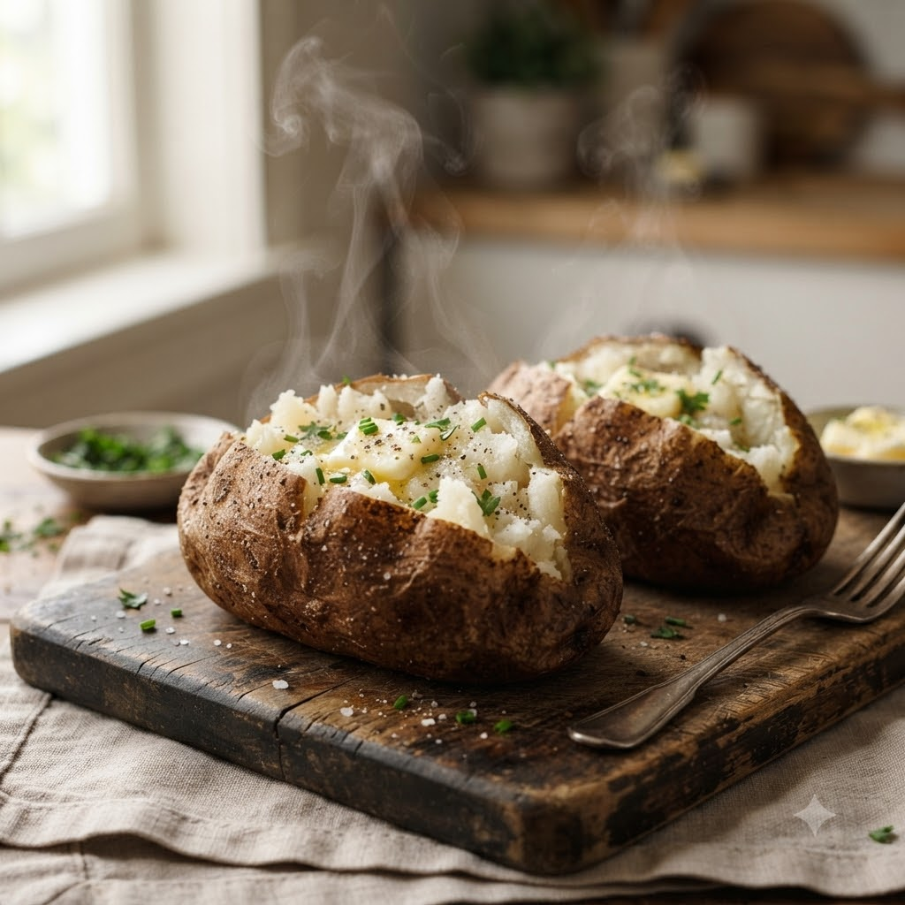

Air Fryer Baked Potatoes

Air Fryer Baked Potatoes
Airfryer – Bake 200°C 38 min — Serves 4
Ingredients
- 4 medium potatoes
- 1 tbsp oil
- 1 tsp salt
- Butter, sour cream & chives to serve
Method
1Preheat: Preheat the Airfryer to 200°C for 4 minutes before adding the food to the basket.
2Prick potatoes all over with a fork; rub with oil and salt.
3Place directly in the basket.
4Bake at 200°C for 38 minutes until a knife slides in easily.
5Split open and top with butter, sour cream and chives.